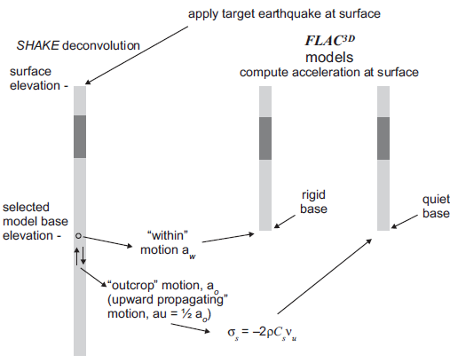

抗震分析的建议步骤
土石结构的抗震分析可能相当复杂，特别是当土料存在动力液化的可能性时。建议采用以下步骤使用非线性有效应力材料模型进行抗震分析。在该步骤中，非线性应力/应变行为由“简单的”弹塑性（Mohr-Coulomb）模型表示，并附加公式以模拟循环加载期间土体的液化和滞回阻尼。总体而言，这些抗震分析步骤也可用于更综合的液化模型。
确定代表性的静力和动力材料特性——FLAC3D 中的有效应力分析方法以完全耦合的力学-流体流动分析形式进行，这需要选择 配置流体计算模式（
model configure fluid），并赋予排水刚度和强度材料性质以及非饱和（“干”）密度（或重度）。此外，完全耦合有效应力计算要求显式指定水的体积模量。此类分析中必须谨慎选择水的体积模量。模型的行为取决于刚度比 \(R_k\)，其定义见求解纯流动问题与耦合流动问题（Solving Flow-Only and Coupled-Flow Problems），此处重复如下：
(1)\[ R_k = {{K_w/n} \over {K + 4 G/3}}\]其中 \(K_w\) 是水的体积模量，\(n\) 是孔隙率，\(K\) 和 \(G\) 是非饱和土的体积模量和剪切模量。人们往往倾向于任意减小水的体积模量以提高时步（并缩短模拟时间）。然而，选择 \(K_w\) 时需考虑两种情形：
- 若根据给定土性和假定 \(K_w\) = 4.18×107 psf（即 2 GPa，纯水）计算得到的 \(R_k\) 值大于 20，则可减小水的体积模量使 \(R_k\) = 20，而不会显著影响结果（并缩短模拟时间）。
- 若采用实际水的体积模量计算得到的 \(R_k\) 值小于 20，则应采用该水的体积模量值。
只要满足上述两个条件，水的体积模量可以随局部弹性模量变化，并可按不同土层分别指定。
材料对动力循环加载的响应通常用剪切模量退化曲线和阻尼比曲线来量化。应为每种材料选择代表性曲线，以准确表示动力加载期间的波衰减和能量耗散。此外，可能需要使曲线随深度变化，以使能量耗散更符合实际（例如见 Darendeli 2001）。
如综合液化本构模型（Comprehensive Liquefaction Constitutive Models）中所述，表示液化行为的综合材料模型可能相当复杂。最简单的液化模型形式（如简单模型公式（Simple Model Formulations）所述）基于对 Mohr-Coulomb 模型的体积变化修正。此时唯一附加的性质是与材料相关的击数。例如，见简单模型公式（Simple Model Formulations）中定义的 Finn/Byrne 公式。
评价地震运动特性——设计地震动通常以加速度记录的形式提供。它通常是露头运动，且往往记录于岩石露头处。了解所记录运动的位置很重要，因为该运动可能需要修改后才能输入 FLAC3D 模型。为获得合适输入运动而进行的反卷积分析将在下文第 6 步中讨论。
应始终检查地震运动的特性，因为这些特性可能影响模型条件。如波传播（Wave Transmission）中所述，输入运动的频率成分影响为准确波传播而进行的网格尺寸选择。应使用准则 \(\Delta l \le {\lambda / 10}\) 选择合适最大网格单元尺寸以实现准确表示。若与输入运动相关的最高频率要求极细的网格（以及相应很小的时步），则可能可以去除高频成分以允许较粗的网格。若输入的大部分功率集中在较低频率成分中（比如 80% 至 90%），则可对历程滤波以去除较高频率而不显著影响结果。FISH 函数“fft.fis”（位于“\datafile\FISH\library”）可用于评价波的频率成分。FISH 函数“filter.fis”（同样位于“\datafile\FISH\library”）可用于执行滤波。
为评估频率成分，建议以质点速度（而非加速度）历程的形式评价输入运动。（加速度记录可使用“\datafile\FISH\library”中所述的“int.fis”转换为速度记录。）对于在连续介质中传播的平面波，容易证明（例如见关于波传播的教科书）应力 \(\sigma = C \rho v\)（其中 \(C\) 是波速，\(\rho\) 是密度，\(v\) 是质点速度）。因此，在考虑屈服或破坏的可能性（这由诱导应力水平决定）时，评价主频时最相关的是质点速度，因为诱导应力与速度成正比，而与加速度无关。
还应检查输入记录是否存在基线漂移（即运动结束后仍持续的残余位移——见基线校正（Baseline Correction））。FISH 函数“int.fis”用于对速度记录积分，以产生与输入加速度相关的位移波形。如有需要，可通过向速度记录中加入低频正弦波来进行基线校正；调整正弦波参数使最终位移为零。示例见坝基（Dam Foundation）示例。
估算材料阻尼参数以表示非弹性循环行为——在抗震分析中使用简单的理想弹塑性材料模型（例如 Mohr-Coulomb 模型）时，必须加入附加材料阻尼，以计入响应弹性部分的循环能量耗散，如此处（here）所述。其中一个困难方面是如何确定合适的材料阻尼输入。通常采用两种不同方案，即瑞利阻尼（Rayleigh damping）或滞回阻尼（hysteretic damping）。
等效线性方法（例如程序 SHAKE 中所采用的）是估算瑞利阻尼方案和滞回阻尼方案所需材料阻尼输入的一种途径。对代表场地条件的土柱进行等效线性分析，使用柱中各土层的剪切波速和密度、选为代表材料特性的模量折减曲线和阻尼比曲线，以及场地的目标地震设计运动。然后确定与弹性应变相容的剪切模量折减系数和阻尼比。可对每个土层估算平均模量折减系数和阻尼比；这些即为采用瑞利阻尼模型的输入参数。
为给滞回阻尼所用的模量折减曲线和阻尼比曲线指定最佳拟合范围，需要给定场地条件下循环剪应变幅值的预期范围（如此处（here）所述）。该范围可由 SHAKE 模拟提供的等效均匀循环应变范围估算。
请注意，这些估算值来自假定非线性水平较低的等效线性分析。可能需要对参数作一些调整，尤其是当实际模型表现出强烈非线性时。第 7 步将进一步讨论这一点。
创建合适的模型网格以保证波传播精度——利用输入运动的特性来帮助选择合适的网格尺寸，并调整输入波记录，以便在抗震分析中给出准确的解。（关于波传播特性与网格尺寸之间关系的更多信息，见波传播（Wave Transmission）。）
在大多数地震模拟中，尤其是预期会出现过大运动和应变时，应进行大应变模拟，以获得更准确的变形解。当预期网格会发生显著变形和畸变时，重要的是尽量减少网格中四面体形网格单元的数量，尤其是在坡面沿线。坡面沿线的四面体网格单元在大应变计算中容易严重畸变，因为四面体网格单元不包含叠合的子网格组。六面体形网格单元包含两组叠合的子网格，可为发生塑性屈服的材料的计算提供更高精度。（见六面体网格的混合离散（Mixed Discretization for a Hexahedral Grid）。）[1]
计算场地的静力平衡状态——尽可能接近地模拟土石结构的施工顺序很重要，以便合理表示结构中的初始静剪应力。这一点很重要，尤其在液化分析中，因为初始静剪应力会影响液化的触发。
简单分析通常假定初始剪切模量（\(G_{max}\)）在每个材料单元内是均匀的。对土体而言，使 \(G_{max}\) 随原位有效应力变化可能更为合适（例如见 Kramer 1996）。例如，可以认为最大剪切模量按 Seed 等（1986）表达式所定义的方式随有效应力变化，
(2)\[G_{max} = 21.7 \times P_a \times K_{2,max} \left( {\sigma_m^{\prime} \over P_a} \right)^{0.5}\]其中 \(P_a\) 是大气压力，\(K_{2,max}\) 是由相对密度确定的常数，\(\sigma_m^{\prime}\) 是有效平均应力。这种初始模量变化可在静力加载阶段通过 FISH 实现。
若在模拟地震时施加滞回阻尼，检查静力平衡状态下的初始剪应力很重要。滞回阻尼公式假定从零剪应变的初始值开始产生滞回。若初始剪应力较高，则滞回阻尼的剪应力和剪应变状态可能不协调。若模型静力平衡状态下剪应力较高，为确保动力阶段剪应力与应变一致，应在模型达到初始平衡状态之前启用滞回阻尼。在静力求解阶段纳入滞回阻尼的建议步骤见此处（here）。
使动力加载与场地目标地震记录相匹配——输入 FLAC3D 模型的地震记录应产生可与目标设计地震动相匹配的计算运动。若目标运动所在位置与模型输入运动的位置不同，则应进行反卷积分析，以施加能在目标位置产生与目标运动相当的运动。
请注意，为再现目标运动，刚性基底模型与柔性基底模型所施加的反卷积运动形式不同。（进一步说明见此处（here）。）对于刚性基底边界，FLAC3D 的输入运动是 SHAKE-91 在指定深度处计算得到的层内运动。对于柔性基底边界，输入运动是上行波运动，即 SHAKE 在指定深度处输出的露头运动的一半。图 1（Figure 1） 示出了不同的基底输入运动：
模型底部（GP 189）与墙顶（GP 4715）处的 \(x\) 向速度

图 1：为获得基底输入运动而进行的反卷积分析。
施加动力荷载与边界条件——抗震分析中应按特定顺序指定动力边界和加载条件。这是因为用于表示远场侧向范围的自由场边界，其性质和初始条件是由紧邻自由场边界的主网格单元传递而来的。施加自由场之后对这些网格单元或网格点所作的任何更改，自由场都无法感知。
建议按以下顺序为动力计算指定条件，以确保这些条件被正确施加：
- 打开动力计算模式（模型动力活动命令（
model dynamic active） 开启（on））和大应变计算模式（设置大变形模式命令（model large-strain） 开启（on））。 - 输入经过滤波和基线校正的输入速度，它对应于由目标加速度反卷积分析得到的模型底部加速度。可通过 导入表格数据（
table import） 命令将输入速度调入 FLAC3D。 - 使用
zone history命令选择动力模拟期间需要监测的各项参数，例如网格点加速度以及网格单元孔隙压力和应力。 - 初始化网格中的位移和速度（使用
zone gridpoint initialize命令），并指定力学阻尼的类型和参数（使用 单元动力阻尼（zone dynamic damping） 命令）。 - 使用 单元动力自由场（
zone dynamic free-field） 开启（on） 命令在模型侧面施加自由场边界条件。然后使用带 table 或 fish 乘数的 施加网格单元面条件（zone face apply） 命令指定地震加载的动力边界。
为在同一边界上同时施加安静边界条件和动力输入，动力输入必须以应力边界的形式施加，因为若以加速度（或速度）波的形式施加输入，安静边界的效果将被抵消。将速度记录转换为剪应力边界条件需采用两步程序：
- 根据所施加波相对于模型底部的方向，使用动力荷载与边界条件（Dynamic Loading and Boundary Conditions）中给出的 \(\sigma_n\) 和 \(\sigma_s\) 公式，将速度波转换为剪应力波和/或法向应力波。
- 在动力计算期间监测基础面处的加速度，以便将该加速度与目标加速度进行比较。若模型内发生材料破坏，将影响波的衰减。此外，若模型较浅，自由面可能使速度和加速度增大，而且这种增大可能延伸至基底。[2] 为产生与目标加速度相当的加速度，可能需要对输入应力波作一些调整。
- 打开动力计算模式（模型动力活动命令（
进行无阻尼弹性材料模拟——在使用实际材料强度和阻尼性质运行动力模型之前，应进行无阻尼的弹性模拟，以估计模型系统的最大循环应变水平和频率响应范围。若循环应变大到足以使剪切模量过度减小，则附加阻尼的使用就值得怀疑。在这种情况下，阻尼将超出其预期的适用范围。若在整个模型中计算出过大的应变，则应检查模型性质和输入幅值。
应在整个模型中监测速度历程，以估计模型系统中产生的主导频率。此外，应记录剪应变历程，以在未提供材料阻尼时估计最大循环剪应变水平。
使用阻尼和实际强度性质进行模拟——无阻尼计算的结果可用于帮助为模型中各材料选择合适的阻尼特性。可为模型规定附加阻尼，以阻尼由无阻尼模拟识别出的振荡振型。
在带阻尼和实际强度性质的初次计算中，应首先检查加速度历程，并将其与场地的目标运动相比较。可能需要调整模型输入运动以改善比较结果。
在地震震动阶段监测若干不同变量很重要。例如，剪应力/剪应变图可以说明滞回阻尼对模型响应的影响。超孔隙压力历程有助于量化液化的可能性，而循环孔隙压力比的云图可勾画出模型中的液化区域。
| [1] | 在包含少量四面体网格单元的网格中，严重畸变的网格单元可能导致计算提前终止。可通过提高该单个网格单元的强度来防止这种情况。只要仅改变少数网格单元的强度，就不应显著影响模型结果。 |
| [2] | 这是自由面速度加倍效应的结果。请注意，自由面对简单正弦速度波的影响会延伸到地表以下大约通过介质传播的波长的四分之一深度处。（速度加倍的幅度可以简单地通过向具有自由面的网格单元柱底部施加波，并监测波通过该柱时各网格单元所经历的最大幅值来显示。） |
⇐ Procedure for Dynamic Coupled Mechanical/Groundwater Simulations: Dam Foundation Wet | Verification Problems ⇒
| 这些内容对您有帮助吗？… | FLAC3D © 2019, Itasca | 原文更新于 2020 年 10 月 8 日 |